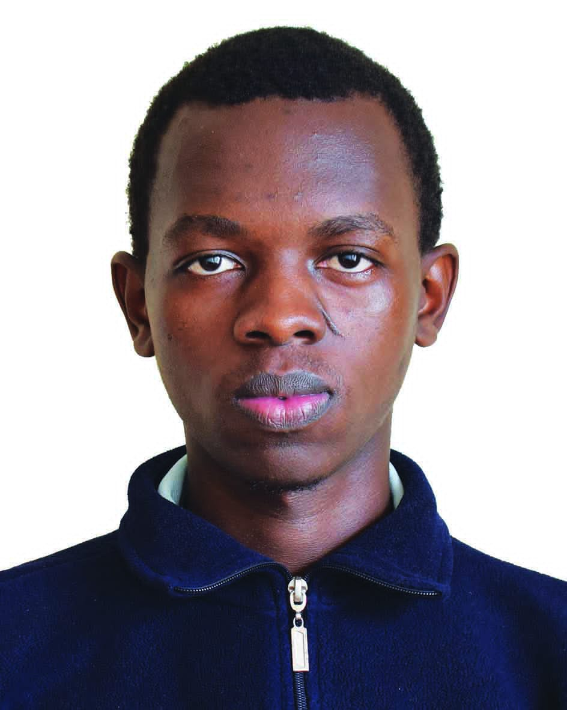
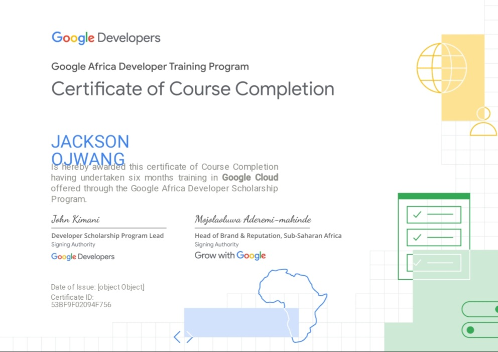

Hello, I'm Jackson Ojwang
Aerospace Engineer | Software Developer | Impact Leadership

I am an aerospace engineering student and self-taught developer based in Kenya. I combine rigorous foundation applied in physics and data analysis with the ability to build practical software systems. I thrive in multidisciplinary environments, whether in aviations systems, managing complex technical project, or driving global impact as a mentor for YYAS and selection reviewer for UWC.
Engineering & 3D Design

Code & Analytics
Multidisciplinary Focus
